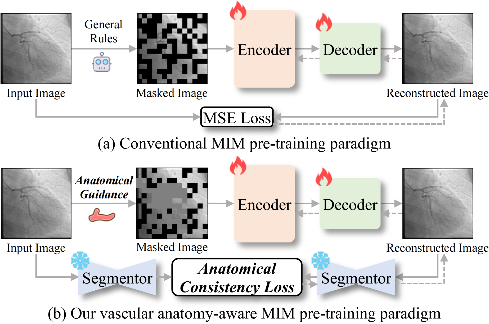

Overview

Comparison of conventional MIM and VasoMIM. (a) Conventional MIM masks patches based on general rules (e.g., random masking) and learns to reconstruct patches via minimizing pixel-level loss. (b) VasoMIM guides patch masking with vascular anatomy and enforces anatomical consistency during reconstruction, enabling the model to learn richer vascular representations. Dark gray patches are vessel-relevant regions.